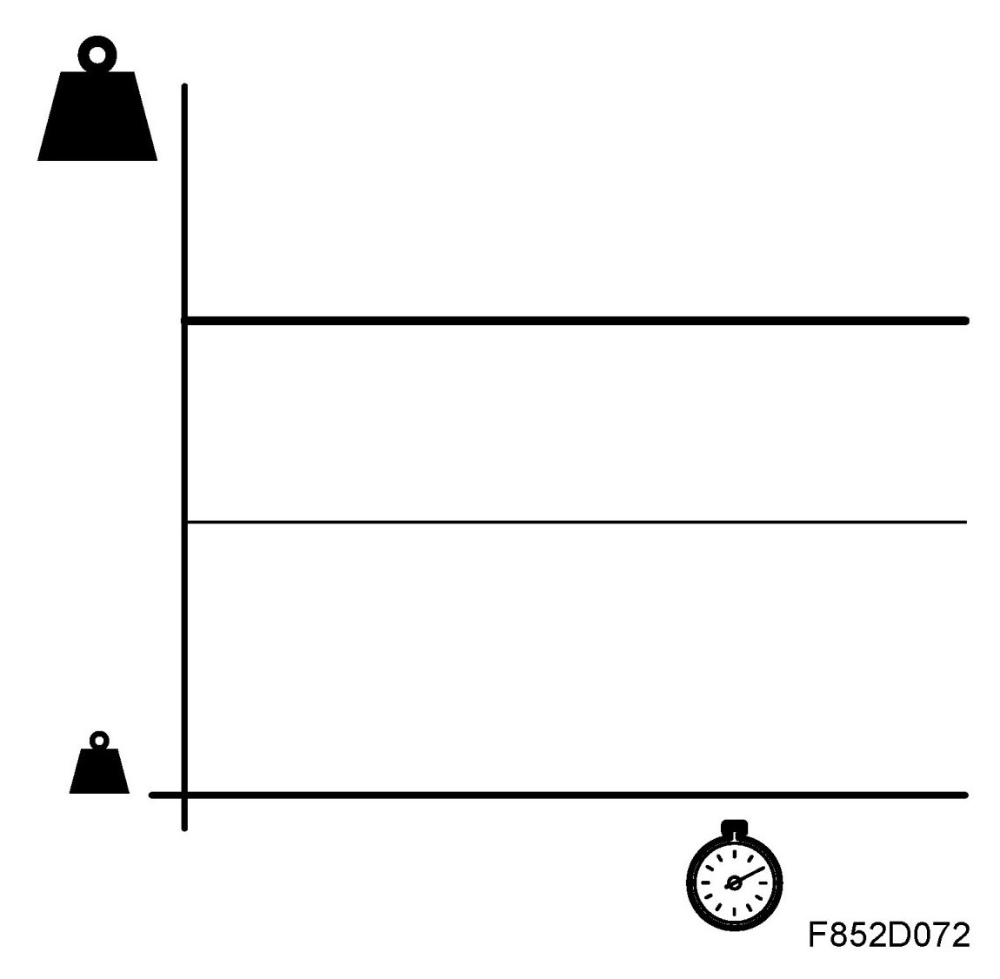
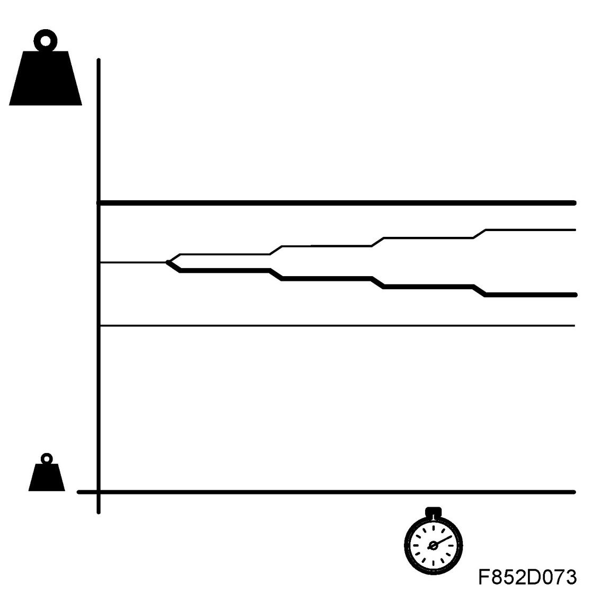
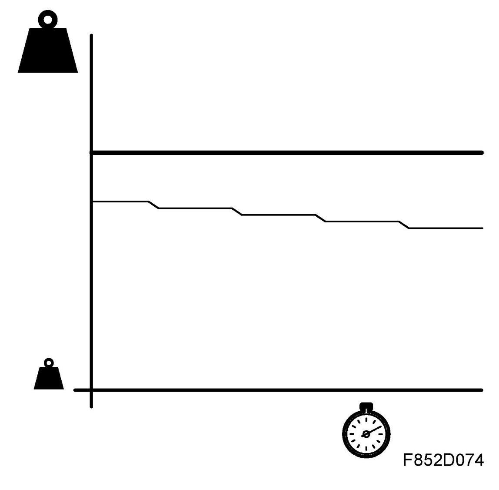
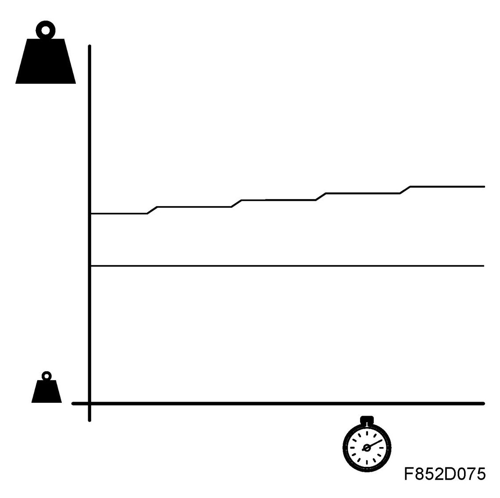
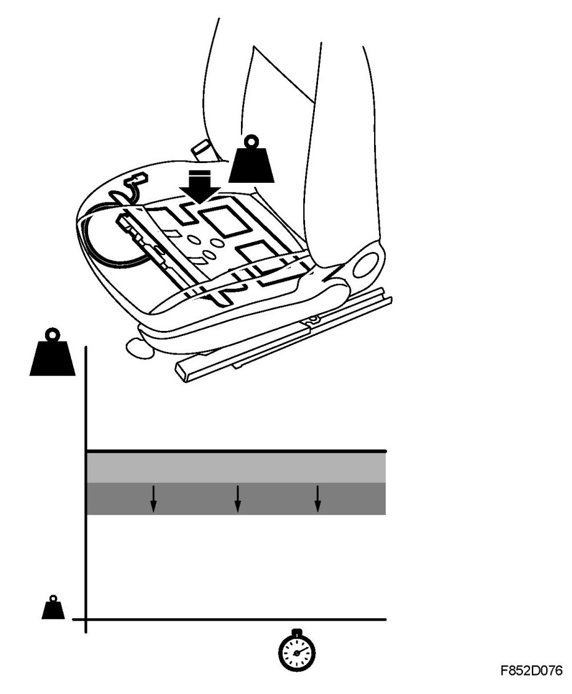
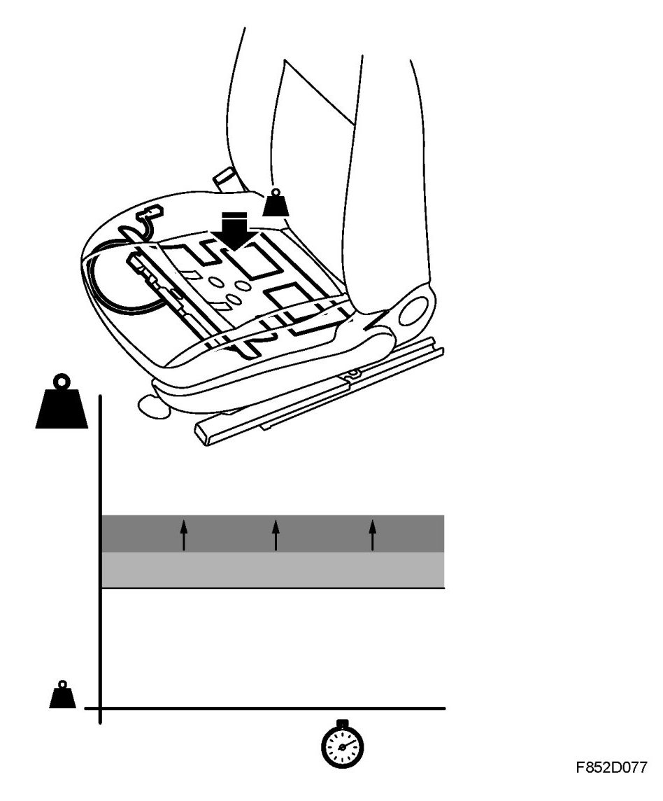
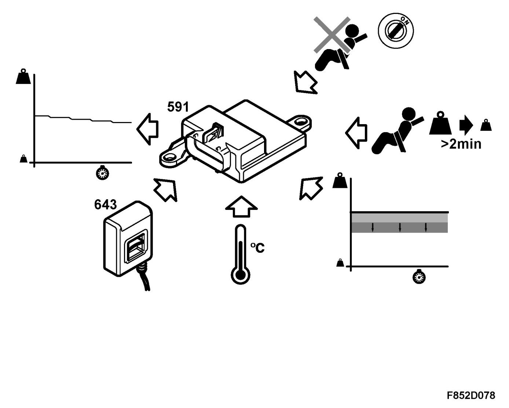
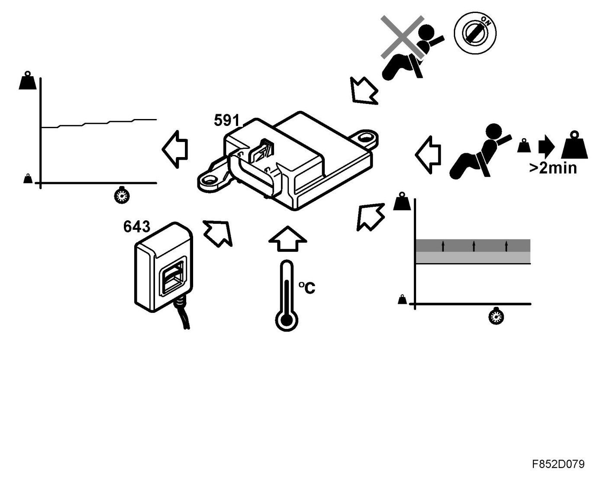

Detailed Description, PPS
Detailed Description, PPS
Background
USA has introduced a new legislative requirement that regulates whether a passenger airbag/side airbag is to be activated. This legislative requirement is called FMVSS 208.
PPS is a system to deactivate the passenger airbag/side airbag for all passengers up to age 6 (23.4 kg) and activate the passenger airbag/side airbag for passenger weighing 46.7 kg or more as per this legislation. In the grey zone between 23.4 kg and 46.7 kg, both activation and deactivation of the passenger airbag/side airbag are considered legally correct.

Function
The PPS control module uses an algorithm to calculate the weight in the seat. The pressure sensor (642), which detects the pressure in the silicone-filled seat pad, sends the measured value to the control module, which converts the pressure into weight (kg). If a passenger weighs:
- less than or equal to 23.4 kg, information is sent to ACM to disable the passenger airbag/side airbag.
- greater than or equal to 46.7 kg, information is sent to ACM to enable the passenger airbag/side airbag.
According to guidelines, a 6-year-old weighs 23.4 kg or less. The guideline value for an adult is a woman weighing 46.7 or more.
Between these two values is the nominal value based on the calibrated weight. There are two nominal values: one for each seat, 9-3 4D/5D and 9-3 CV.
In addition to the nominal value, the control module takes into account the tension of the belt and the interior and exterior temperatures.
The belt force sensor, which is located on the belt anchorage, provides the control module information on tension and determines if a person or child seat fastened that could affect the weight in the seat. In this manner, the PPS control module can calculate the right weight and transmits information to the airbag control module, which in turn enables or disables the passenger airbag and side airbag. The PPS control module illuminates the indicator lamps in the switch panel (737a).
A serial communication cable is connected between PPS and the airbag control module. The PPS control module sends the following information:
- Diagnostics
- Passenger airbag/Side airbag ON/OFF
- Seat occupied YES/NO (sends information to ACM, seat belt warning). NO has two statuses, one of which is an intermediate status in which the pressure is below the threshold value. The PPS control module then transmits the message NO. The other status, of course, is when there is no pressure. The PPS control module then transmits the message NO.
The airbag control module sends the following information:
- Rheostat value
The passenger airbag/side airbag are disabled if a fault occurs in the Passenger Presence System.
Calculation algorithms
There are four statistical algorithm functions.
1. Basic functions
- A fixed upper and lower limit to establish the nominal threshold value.
- Adjustment of the nominal threshold when an adult is buckled up in the passenger seat while the car is being driven.
- Adjustment of the nominal threshold when a child is buckled up in the passenger seat while the car is being driven.
2. Adjustment algorithm based on the age of the passenger seat. This is done with the seat empty.
- Adjustment of seat weight.
- Nominal threshold value adjusted either up or down.
3. Adjustment algorithm based on the passenger seat environment.
- Temperature compensation using an integrated sensor in PPS.
- Pressure calibration.
4. Adjustment algorithm based on belt force sensor (643)
- Compensation for tension.
Explanation
The limit for an adult corresponds to a woman weighing 46.7 kg or more. The limit for a child corresponds to a 6-year-old weighing 23.4 kg or more. The threshold value for the seat is the reference value of a load. Each car model has its own reference value that is preprogrammed by Saab. The nominal seat threshold value is a value that is based on the seat threshold value and then adapted to the weight in the seat.

Adaptive calculation algorithms
There are also two adaptive calculation algorithms that partly take into account whether there is a child or an adult sitting in the seat, partly ageing characteristics in the system and the seat.
1a. Programming while driving for adult or child:
- adjustment of the algorithmic calculation is done in small steps
- a smooth adaptation that is adapted to a passenger sitting still
Conditions for programming of algorithm, adult or child
- if the pressure (weight) is close to the nominal threshold value
- if the pressure (weight) is above or below the nominal value for 2.5 minutes, the threshold value will be adjusted.
- the threshold value can be adjusted max. 5 steps
- each step takes place after 2.5 minutes
Example of adult: If the passenger's weight is above the seat threshold value but below the adult limit of 46.7 kg, the nominal seat threshold value will be reduced in max. 5 steps, one step every 2.5 minutes (one step ~ 0.5 kg).

Example of child: If the passenger's weight is lower than the seat threshold value but above the child limit of 23.4 kg, the nominal seat threshold value will be increased in max. 5 steps, one step every 2.5 minutes (one step ~ 0.5 kg).

1b. Programming (adult or child)
- a quick adaptation that is suited to the rapid movement of the passenger in the seat.
- the algorithm changes the nominal threshold value up or down by ~ 0.7 kg.
- if pressure and weight are close to the limit value
Conditions for programming of algorithm for adult or child
- The pressure is above or below the nominal threshold value or outside the tolerance for one minute. The nominal threshold value will be adjusted ~ 0.7 kg.
- The temperature must be with the tolerance range.
If the passenger weighs ~20% or more of the seat threshold value and below the permitted threshold value for adults for more than 1 minute, the nominal seat threshold value will be reduced by ~ 0.7 kg. Adult locking limit.

If the passenger's weight is ~15% or less of the seat threshold value and more than 9 kg, which is the lowest permitted limit for a child, the nominal permitted threshold will rise by ~0.7 kg.

2a. Programming empty passenger seat (Learn down)
- Allows the system to compensate for the value of the tension. The seat cushion and upholstery lose their resilience over time.
Conditions (Learn down)

- No passenger in seat when ignition is on
- Low threshold value for empty seat for 2 minutes (Calibration)
- Outside threshold value (during calibration).
- Temperature within range +3 degrees C - +40 degrees C (during calibration).
- Programme one step alternate times the ignition is turned on (during calibration) (one step is approx. 0.5 kg).
- Belt force sensor is below value, unfastened.
2b. Programming empty passenger seat (Learn up)

Allows the system to compensate the tension. When changing upholstery or incorrect learn down.
Conditions (Learn up)
- No passenger in seat when ignition is on.
- High threshold value for empty seat for 2 minutes (during calibration).
- Outside threshold value (during calibration).
- Temperature within range +3 degrees C - +40 degrees C (during calibration).
- Programme one step each time the ignition is turned on (during calibration) (one step is approx. 0.5 kg).
- Belt force sensor is below value, unfastened.
PPS (Passenger Presence System) control module (591)
The PPS control module that is calibrated with the seat from Saab includes, depending on model: seat foam, silicone blister, spring mat and heating pad.
With the help of an algorithm, the PPS control module then calculates the weight in the seat. The PPS control module detects the pressure in the silicone filled seat mat. The pressure reading is converted to kg.
If the weight is:
- < or equal to 23.4 kg, information is sent to ACM to disable the passenger airbag/side airbag
- or equal to 46.7 kg, information is sent to ACM to enable the passenger airbag/side airbag.
According to guidelines, a 6-year-old weighs 23.4 kg or less. The guideline value for an adult is a woman weighing 46.7 or more.
With the help of the belt force sensor, the PPS control module can detect the tension in the belt and determine whether it is occupied by a person or child seat that could affect the weight in the seat. In this way, the PPS control unit can calculate the correct weight and send the information to the airbag control module.
The PPS control module illuminates the indicator lamp in the switch panel (637a).
A serial communication cable is connected between PPS and the airbag control module. The PPS control module sends the following information:
- Diagnostics
- Passenger airbag/Side airbag ON/OFF
- Passenger seat occupied YES/NO (sends information to ACM, seatbelt reminder)
The airbag control module sends the following information:
- Rheostat value
If there is a fault in the Passenger Presence System, the passenger airbag and side airbag will be disabled and the Passenger Airbag OFF lamp will come on.
Pressure sensor, occupied seat cushion, front passenger (642)
On the passenger side there is a silicone filled seat mat with pressure sensor. The silicone in the plastic mat creates a pressure that is measured by the control module (591) with a pressure sensor (642). The silicone seat mat is calibrated together with the complete seat cushion and PPS control module on delivery from Saab.
Force sensor, front passenger seat belt (643)
On the belt tensioner at the bottom belt anchorage point is a force sensor that detects the load exerted on the seat belt. This is a Hall sensor that is used to provide the control module (591) with information on tension caused by mounting a child seat. The signal value is between 0-5 volts. With the help of this parameter, the control module (591) can calculate the actual weight in the seat.
Example: if the tension is high, it will affect the weight in the passenger seat. The measured weight calculated in the PPS control module must be reduced and filtered.
Indicator lamp, Passenger Airbag ON/OFF (612a/b)
When the ignition key is turned to start or drive position, the indicator diodes for the passenger airbag ON/OFF will come on for 5-6 seconds with maximum intensity to check the lamps. After this, either the ON or OFF lamp will stay on.
The ON or OFF indicator lamp follows the intensity of the instruments in four steps.
The rheostat values are:
- 0-20% step 1
- 21-40% step 2
- 41-75% step 3
- 76-100% step 4
If there is a fault in the PPS system, the airbag lamp will come on together with the Passenger Airbag OFF indicator lamp.
Repair
Each seat must be set to the basic pressure on the silicone-filled seat pad. Thus, each seat is individually calibrated after assembly at the seat manufacturer. Constituent parts that can affect this basic pressure are part of the repair kit. All parts in the kit have been calibrated to one another at the seat manufacturer. All parts in the kit must be replaced. After replacement, the PPS system must be calibrated using ignition cycles.